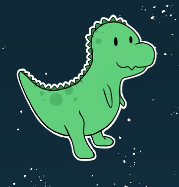
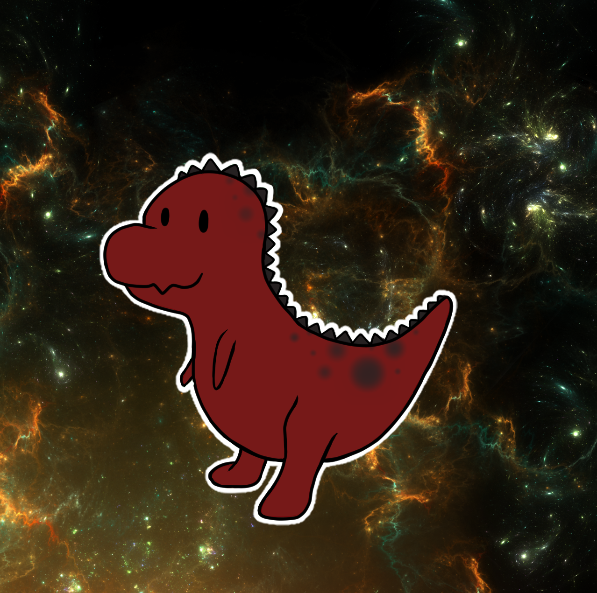

Haven Kotara
Degree
My current degree of study is Computer Science. I plan to graduate Fall 2023 with a Bachelors.
I'm considering pursuing my Masters, but haven't decided yet. I'm antsy to kickstart my career
and don't know if I can afford another four years. We'll see, maybe an opportunity will pop up.
Current Classes
- CS4413 Web Technologies 8:30am - 9:45am - Tuesdays and Thursdays
- CS4843 Cloud Computing online class - no set time or days
- CS4393 User Interfaces 1pm - 2:15pm - Tuesdays and Thursdays
- CS3793 Artificial Intelligence 6pm - 7:15pm - Tuesdays and Thursdays
Ideal Job / Interests
My current plan is to work in HEB Digital - or any other promising entry level opportunity.
I hope to get an internship this summer though HEB. It would get my foot in the door and be
great experience for future job opportunities. I currently work at my local HEB, this is why I'm
a bit adamant about moving up in the company - I've already worked here for 4 years, that may give
me some brownie points towards getting a job in Digital since HEB likes to train up their partners.
If possible, I would like to explore research in A.I. and its use in medical advancements.
There's much left to pioneer in A.I., the idea of discovering new advancements and programming something that
could help people is exciting to me. I hope to explore this through an independent study in the Fall.
This semester I'm taking Artificial Intelligence, and am exploring A.I. for the first time. I'm very new
to A.I. and have a lot to learn, but I think this is the perfect opportunity to learn the basics and continue
learning on my own through researching and practicing with it in the Fall. I'm trying to get a headstart on it
now by reading up on the topics my study would cover. If I wait till the Fall, I worry most of the semester will
be taken up by reading - leaving little to no time for putting that information into practice. I want to make the
most of the time I'll have, so I'm getting ahead where I can.

Hobbies
This semester is packed so I likely won't have much free time. But when I do have the opportunity,
I enjoy gaming or finding creative outlets through drawing, embroidery, singing, gardening, etc.
Gaming
- I think my niche is fantasy, creative games where I can immerse myself in the virtual world. It offers
me an escape from the real world into a happier reality of my own making. It almost feels like a level
up from the experience of reading a good book. My imagination can be brought to life in a way I can see
and interract with. It's really realaxing for me and offers a good long-distance activity to do with friends.
Presently, my go-to games are:
- Final Fantasy XIV
- Genshin Impact
- Phasmophobia
- Witch It
I play with others depending on what friends want to do, but these are my main titles. I'll play just about anything with friends.
Gardening
- My gardening hobby is mostly indoors - my room is filled with various plants that are mostly alive.
I'm still new to the hobby and learning as I go, the winter months pose a challenge in figuring out a
new watering schedule. I've tried my hand at a few different plants now and had a variety of luck.
Pothos, some succulents, monstras, micans, sanservias, and alocasias have all done well and survived.
I've unfortunately struggled with carnivorous plants, lilies, orchids, and basically everything else.
Plants can be sensitive and I'm limited to the environment of my room, so some plants are difficult to
keep in those circumstances. In time I'll get the hang of it, I just need to keep throwing money at new
plants and trying new things until they stop dying.
I typically purchase my plants from PlantlyAddicted, a small etsy shop.
Digital Art
- Most of my drawing is digital art using Clip Studio Paint. I'm not a pro by any means, but I typically
can make things look like the things they're supposed to be. Lately I've been practicing sketching from
life - specifically focusing on humans. People are hard to draw, bodies are weird when detailing; but I'm
slowly getting the hang of it. I often use photos of my friends as references when sketching. I think I put
more love and detail into art that I feel passionate about or connected to. Drawing my loved ones gives me
the same feeling and motivation. In time I'll be able to draw without needing to heavily reference photos,
but for now my crutch is helping me improve my skills.
I also like drawing cartoony dinosaurs - here's some of my art:


- The singing hobby is new - I recently signed up for classes so I have something fun on my schedule in
between classes, homework, and my job. I was meant to begin a few weeks ago, but life had other plans.
The day after I scheduled my first session, I tested positive for COVID. Had to contact the teacher again
to let them know I had to push back the sessions for at least two weeks so I could recover. THEN the sessions
had to be pushed back another two weeks because the teacher had back to back conflicts come up on my scheduled
days. I guess the universe wanted me to get a little more settled in my school schedule before dedicating time
to a hobby - or it's trying to tell me I suck at singing and to turn back while I can lol.
Cool Thing
Wanna see somethin cool? Click the link.